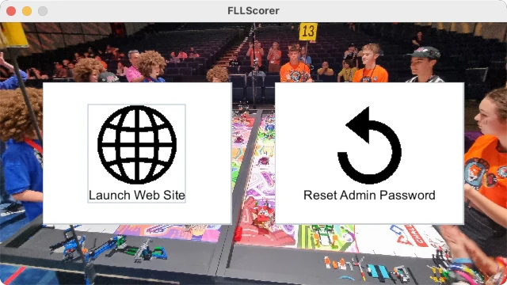

Quickstart
This quickstart covers the essentials of getting an event running using FLL Scorer.
Requirements
The minimum requirements to run an event with FLL Scorer is a computer with two display outputs (for example, a laptop with an output for a second display) and a large display or projector for providing the audience display (in reality, an audience display isn’t truly required, but is highly recommended). The computer must have a Java Runtime (version 17 or later), and of course the FLL Scorer software! This computer must also be connected to a sound system so that the game sounds (match start, 30 second warning, and match end) can be heard by the referees and teams (unless alternate means are being used to time the matches).
More capabilities require additional equipment; another computer/display to have a separate timer display, another computer/display to have a scoreboard in the pits (instead of/in addition to the competition floor), another computer to have multiple scorekeepers entering scores, and so on. Adding additional computers also requires some networking setup; either one that is brought into the venue or one that already exists in the venue; these details are covered in Networking.
Downloading FLL Scorer
The latest version of FLL Scorer can be downloaded from GitHub;
FLLScorer.jar is the only file that needs to be downloaded. It can be
placed in any location that is convenient; there is no installer and no install
process. It will create two files in whichever directory it resides in;
scores.db which contains all the information captured/stored by the scoring
system, and log.txt that contains a transaction log of all changes to
scores.db.
Downloading a Java Runtime
Obtaining a Java Runtime is largely left as an exercise for the reader. The steps required and the places to go download the runtime varies from platform to platform; in this case, Google is your friend!
Running FLL Scorer
Starting the application is as easy as double clicking on the Jar file in the file display application of the operating system; Finder on MacOS, Explorer on Windows, and any number of different possibility on the various Linux distributions. If everything is setup correctly, the following will be displayed:
Clicking on the Launch Web Site button opens the web site, where all the
fun happens, in the default browser:

Browser Support
FLL Scorer is developed using Chrome (which includes Chromium), but should display correctly using other browsers. Having Chrome as a backup is recommended in case something strange occurs in the middle of an event with another browser; better to get through an event with Chrome than to be broken and stuck with something else. Of course, if an event has been successful with another browser, future events should also work with that browser.
For mobile devices, Safari on iOS is used during development and is known to work very well. Android becomes much more interesting as there are a variety of default browsers in the different adaptations of Android.
If you encounter problems with a particular browswer (desktop or mobile), please report it in an issue so that it can be fixed. Thanks!